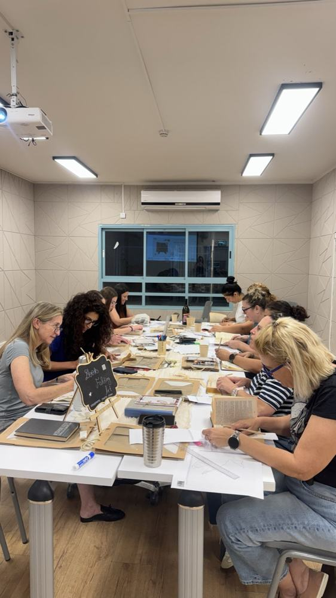
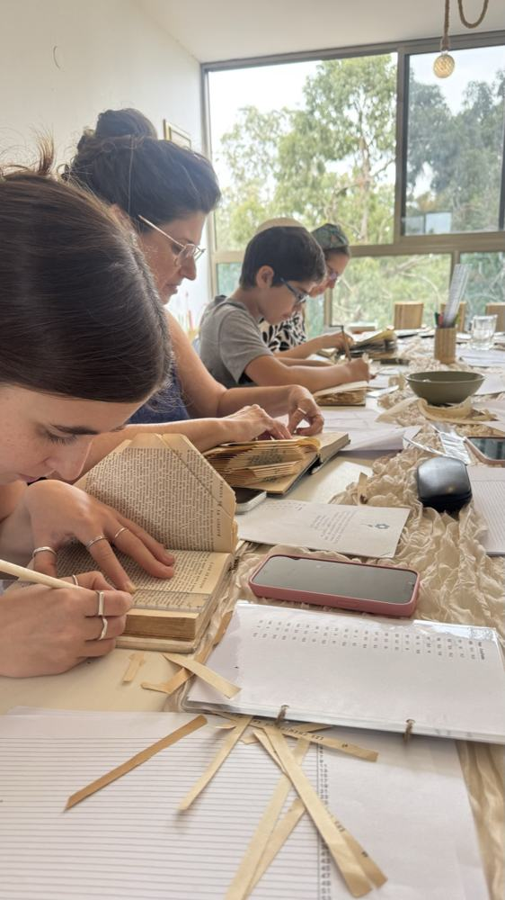
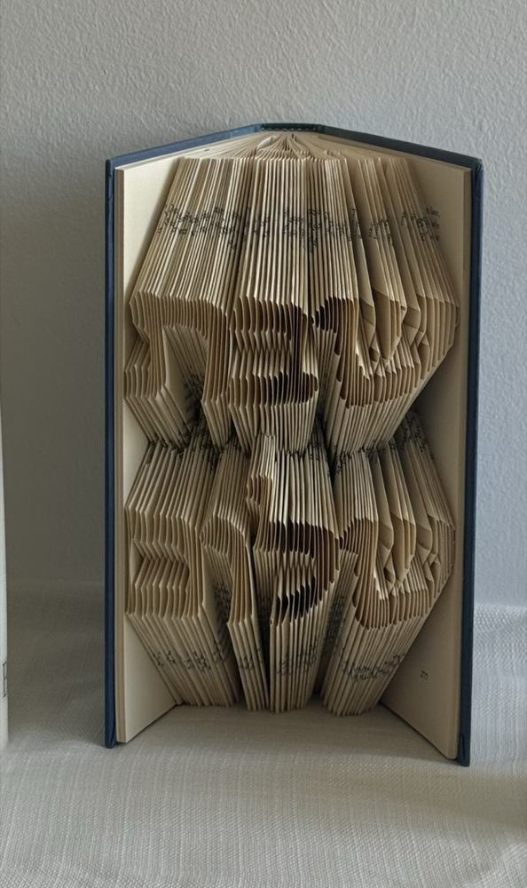

סדנת עומק
סדנת בוטיק בפיסול ספרים
שלוש שעות של עבודה מעשית ורקע תאורטי. המשתתפים לומדים את הטכניקה, מתנסים בעצמם ויוצאים הביתה עם יצירה מוגמרת. אין צורך בניסיון או ברקע באמנות. מספיקות סבלנות ואהבה לעבודת ידיים.
- משך
- 3 שעות
- משתתפים
- 15–25
- קהל
- מבוגרים
- ניסיון קודם
- לא נדרש
מחיר
180 ₪ למשתתף
לרוב המרכז מסבסד חלק מהמחיר, והמשתתף משלם את השאר.
- חלק מעשי וחלק תאורטי
- כל משתתף יוצא עם יצירה מוגמרת
- ספרים נטושים שמקבלים חיים שניים, וכל הציוד כלול